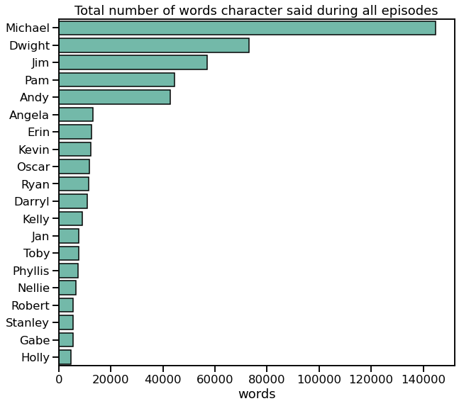

“Sometimes I’ll start a sentence, and I don’t even know where it’s going. I just hope I find it along the way.” - Michael Scott
This project is about "The Office", American sitcom showing everyday life of a typical office. One who saw this sitcom probably noticed that engagement and hilarity of episodes are not constant in time and slowly degrade through seasons. Of course, you can find a plenty of hypothesis on YouTube explaining why this fading happens. But I ask myself: is it possible to explain episode ratings using data science approach? Are there features that influence ratings the most? Can I create a recipe for ideal episode? Those were my motives to start working on this project.
In this post I will show you my main results and some code I use. To see the details of data processing and modeling as well as more results, see my jupyter notebook.
P.S. This is learning project, so I didn't check if there is similar analysis on the web and therefore do not claim any priority or uniqueness.
"Wikipedia is the best thing ever. Anyone in the world can write anything they want about any subject. So you know you are getting the best possible information." - Michael Scott
To predict episode popularity I needed to have information about episode's rating and of course some data on the episode content. I decided to use IMDB rating to characterize score of each episode. Here I found nice dataset with this information already extracted and saved as .csv. To describe each episode I used it's script and names of director and writer who created it. I was lucky to find this library, called schrute, containing lines of each character for each episode. It was nice to work with this library since one can easily transpose it into pandas data frame format.
To summarize, I had following initial data for each episode:
Season, episode number, title episode description, air date do not help to construct ideal episode, so I didn't use it in my analysis. All remaining properties were used in episode characterization.
Main obstacles I faced in data preparation phase was inconsistency in episode numeration in databases. In schrute database all double series count as one. In database with episode rating some double episodes count as one, while others as two. I decided to use schrute numeration since I don't know how to separate script for double episode in two parts (except by doing it by hand). I merged some episodes in the episode database and changed numeration for the rest. As soon as all numeration was fixed, I was able to combine this two databases in one.
Data cleaning included transformation of writer and director into categorical type and extracting month of release from air date.
“Okay, too many different words from coming at me from too many different sentences.” - Michael Scott
At this step I used script information (lines of each character in each episodes) to extract some meaningful features which could help to characterize each episode. To work with text I used nltk library. I should point out that my analysis of the text is purely mechanical (counting the word) instead of real language processing, since, as I feel, deep semantic analysis is a topic for another project, a big one (“That’s what she said.” Michael Scott).
Preprocessing of text included tokenisation, deleting non-alphabetic symbols and sometimes deleting stop words (common words, which do not provide useful information). My function for text preparation.
# returns bag of words
def prepare_text(text, stop=True):
words = nltk.word_tokenize(text)
words=[word.lower() for word in words if word.isalpha()]
if stop:
words = [w for w in words if not w in stop_words]
return words
First feature I wanted to extract was the number of words for each episode. I didn't delete stop words for this calculation.
df['words'] = 0
for season in range(1,10):
episodes = np.sort(df[df.season==season].episode.unique())
for episode in episodes:
text_row = ' '.join( word for word in script[(script.season==season) & (script.episode==episode)].text)
text = prepare_text(text_row,stop=False)
df.loc[(df.season==season) & (df.episode==episode),'words'] = len(text)
There are two distinct areas in distribution of words, corresponding to normal-length episodes and double episodes. For normal episodes mean number of words is 2812, for double episodes it is 5329 (median is 5200). It means, in double episode characters do not speak twice as much as in normal, but slightly less.

Another interesting feature is the number of words for each character. Below total number of words across all episodes is shown for most talkative characters.
It is clear, that Michael is champion in talking. Even though Michael has been absent for two seasons, he talks much more than characters present all the time. Looking at this plot one can easily separate the primary characters from the secondary ones. Primary characters (Michael, Dwight, Jim, Pam and Andy) talks at least twice as much as secondary.
Next step was to count number of words for each characters in each episode. I made it for top 30 most talkative characters. To be able to easily compare double and normal episodes, I normalized number of words said by character by total number of words in this episode. I ended up with a percentage of how many words each character said relative to all the words said in the episode.
for person in characters:
df[person + '_words'] = np.nan
for season in range(1,10):
episodes = np.sort(df[df.season==season].episode.unique())
for episode in episodes:
text_row = ' '.join( word for word in script[(script.season==season) & (script.episode==episode) & (script.character==person)].text)
# do not delete stop words
text = prepare_text(text_row, stop=False)
# total words in the episode
total_words = df[(df.season==season) & (df.episode==episode)].words
# calculate precentage and save in df
df.loc[(df.season==season) & (df.episode==episode),[person + '_words']] = 100*len(text)/total_words
In the figure below number of words of most talkative characters is shown as fraction of total words in all episodes of a given season. One can clearly see that share of airtime when Michael speaks decreases almost linearly with the time. But as long as Michael stayed on the show, the free time was taken up by secondary characters, not the main. That is, the airtime of Dwight, Jim and Pam didn't change a lot. Only during two last seasons Dwight and Andy involvement increased drastically in an attempt to fill in the emptiness after Michael's leaving.

It was also interesting to me, how the number of words for each characters correlates with the number of words for other characters. Visualization of correlation matrix is shown below for 20 most talkative characters.

The first thing that catches my eye is that Michael has mostly zero or negative correlations with people. It seems to be true, because Michael tries to dominate in all conversations and and tends to occupy all the air time. The only positive correlations he have are with Jan and Holly with whom he had romantic relationships.
But this correlation table is averaged through all the seasons. For each season picture differs cardinally. For example, let's look at Michael and Dwight fraction of words (defined similar to the table above) for first six seasons. In first and third season we can see clear linear dependency: the more Michael talks the less Dwight talks and vice versa. In season 2 and 4 the speech of Dwight occupies approximately the same part of the episode and doesn't correlate with Michael words
Another feature that could be important in rating prediction is number of dialogues between characters. In schrute dataset there are only sequences of phrases told by character. There are no scene descriptions or timing of each line. So, in searching for dialogues I could only rely on sequence of lines. Here I assumed that if characters' phrases alternate, these characters talk to each other. I counted as a dialog a set of at least 4 lines of two characters where characters' lines alternate. Using this technique I may count last line of the previous dialog as the first line of the following one, so, the error of number of lines in dialog could be +- 2 lines.
# create array of names in order of they appearance in script
def who_is_speaking(df, season, episode):
script_tmp = df[(df.season==season) & (df.episode==episode)]
speaking = []
for index in script_tmp.index:
speaking.append(script_tmp[script_tmp.index==index].character.values[0])
return speaking
characters_dialog = []
# create array with column's name
# create empty column in database
for name1 in characters:
for name2 in characters[characters.index(name1) + 1:]:
names = np.sort([name1, name2])
column_name = names[0] + '_' + names[1] + '_dialog'
df[column_name] = 0
characters_dialog.append(column_name)
df['dialog_mean_length'] = np.nan
df['number_of_dialog'] = np.nan
for season in range(1,10):
episodes = np.sort(df[df.season==season].episode.unique())
for episode in episodes:
# save all speakers
speaking = who_is_speaking(script,season, episode)
dialog_length = []
i = 0
while i < len(speaking)- 1:
names = np.unique(speaking[i:i+2])
# count dialogs only for 20 most talkative characters
if all([name in characters[:20] for name in names])==False:
i += 1
continue
# check that two different persons speak
if len(names)==2:
max_shift = len(speaking) - i
# search for end of dialog
for shift in range(2,max_shift):
new_names = np.unique(speaking[i:i+shift])
#condition to stop search : new name appears
if any([name not in names for name in new_names]):
break
dialog_length.append(shift-1)
# save only dialog with 4 replicas
if shift > 4:
names = np.sort(names)
key = names[0] + '_' + names[1] + '_dialog'
df.loc[(df.season==season) & (df.episode==episode), [key]] += shift-1
i += shift - 1
# if speaks only one person: go to to next replace
else:
i += 1
# save statistics of dialog
df.loc[(df.season==season) & (df.episode==episode), 'dialog_mean_length'] = np.mean(dialog_length)
df.loc[(df.season==season) & (df.episode==episode), 'number_of_dialog'] = len(dialog_length)
# normalisation of dialog number for double series
df.loc[df.double == 1,['number_of_dialog']] = df[df.double == 1].number_of_dialog.apply(lambda x : x/2)
Let's look how dialogues change with the time. It seems that from season to season dialogues become shorter and in each episode number of different dialogues between different characters increase. So, in late seasons there are a lot of short dialogues.